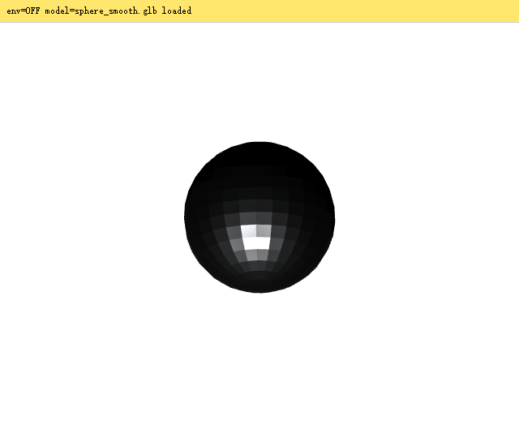
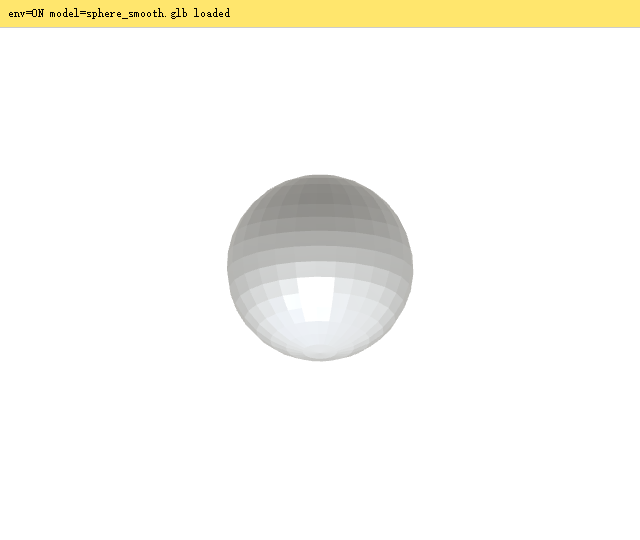

github.com/alchaincyf/3d-vibe-coding-handbook（book/ 全书 HTML+339 图，demos/ 三个 demo 源码，scripts/ 11 个工具脚本，manifest/ 56 件资产清单）。资源包 11 个共 229MB 按 §00 索引下载，不出整包。| 章节 | 一句话内容 |
|---|---|
| §00 | 这本书怎么用 + 11 个资源包索引（按需下载，各带 SHA256） |
| §01 深挖 | 十分钟跑通第一次图生 3D：两种模式、价格结构、面数框的口径陷阱 |
| §02 | 参考图怎么准备——"图生 3D 的成败，八成不在开关，在你喂进去的那张图" |
| §03 | 生成之后：导出弹层、API 直链绕开"另存为"弹窗、签名链接约两天过期 |
| §04 深挖 | 减面与重拓扑：E10 对照实验、1.75 换算系数、减面下限、"卡顿先量贴图" |
| §05 | 智能拆分与贴图生成（拆件不吃四边面、不吃已绑骨模型） |
| §06 | 绑骨与动画：自动绑骨 20 积分、三模式对照 |
| §07 | 怎么把积分花在刀刃上：每个动作的基础价与加项逐笔对账 |
| §08 | 为什么先出设计图再建模（设计图 = 可复现的中间产物） |
| §09 | 提示词技巧示例（含图） |
| §10 | 批量出图与命名 |
| §11 深挖 | 把 Tripo 接进你的工具：CLI / Codex 插件 / MCP / API / DCC Bridge 五条路 |
| §12 深挖 | Three.js：环境贴图 / 贴图显存 / 骨骼复制三坑 + 性能测量方法论 |
| §13 | Blender：什么时候该进（绑骨权重），什么时候别进（减面等价） |
| §14 | Unity：把资产搭成会动的园区 |
| §15 | 谁负责哪一层：近景 AI 模型 / 远景代码渲染的分工判据 |
| §16 | 从选题到资产清单（"23、25、29 数的不是同一批东西"的对账表） |
| §17 深挖 | 生成与清洗流水线：逐件生成 → 导出 GLB → 批量减面 → 归一化尺寸 |
| §18 | 组装：把 23 件模型变成一个能开的城（实例配额、A/B 帧时间） |
| §19 | 验收与发布 |
| §20 | 机构类案例：一台能拆能装的四冲程发动机（曲柄滑块按真实运动学算） |
| §21 | 艺术类案例：星月夜拆五层，两层换 Tripo 真 3D |
| §22 | 世界类案例：小王子星球（28 米直径走得完） |
| 附录A | 56 件资产逐件规格（三角面/顶点/贴图/积分，可当验收单，以文件读数为准） |
| 附录B | 踩坑索引：按症状查的五张表——"已经动手了卡在某个症状上"先翻这里 |
| 附录C | 配置与积分参考 |
| 附录D | 术语人话版 + 面数换算的完整分布 |
一句话：上传一张设计图，几十秒后得到一个能拖着转、能下载的 3D 模型（GLB）。背后的学术底座就是 vault 里已学的 [[LRM大型重建模型]] 前馈范式——TripoSR 是 Tripo（VAST）的开源研究版（2 秒本地出灰模），Tripo Studio 是同一家的商业产品管线：灰模只是起点，后面还挂着贴图生成、智能拆分、重拓扑、自动绑骨一整条服务链。
花叔干了件笨事：坐在表单前把"几何与贴图"弹层里的开关一个一个动，看按钮上的数怎么跳（全程只看不按，0 积分）。跳出来的结构特别规整：
| 状态 | 按钮 | 拆解 |
|---|---|---|
| 只关掉 Texture（灰模） | ⚡15 | 几何底价 = 15 |
| 贴图 2K | ⚡30 | +15 |
| 贴图 4K | ⚡40 | +25 |
| 贴图 8K（默认！） | ⚡50 | +35 ← 默认价的一半在买 8K 贴图 |
| 8K 再开 Ultra Mesh | ⚡65 | Ultra 另算 +15（不在默认 50 里） |
| 智能网格 P2.0 | ⚡65 + 30 | 网格 65（原价 100 划线），贴图另付 30 |
两种模式的"面数"框数的不是同一种面：高精度模型（v3.1）出三角面，那个数就是三角面；智能网格（P2.0）出四边面，那个数数的是四边面。引擎最终只认三角面——四边面进引擎要拆成两个。E10 实验（同一张出租车图、都填 8000、只换模式，输入图 SHA-256 三方对齐）：
| A 高精度 v3.1（15 分） | B 智能网格 P2.0（65 分） | |
|---|---|---|
| 原生面 | 7,379 三角面 | 8,596 四边面（占 79.51%） |
| 三角化后 | 7,379 | 15,431 |
| 顶点 | 3,646 | 8,580 |
减面（decimation）在原来的面上合并删减，拓扑变乱；重拓扑（retopology）是同一形状重新铺一张规整的网（10 积分，要进 Blender 改/绑骨才需要）。先说反直觉的事实：巴黎 29 件资产面数 16,711~46,196、中位 18,509，没有一个超 10 万——整个项目一次重拓扑都没用上。所以第一个动作不是打开重拓扑页，是先数面数。
| 情况 | 动作 | 成本 |
|---|---|---|
| 面数已在 1.5~3 万，做静态道具 | 什么都不用做 | 0 |
| 几十万面（镂空建筑）/ 要绑骨 | 重拓扑（四边面） | 10 分 |
| 一批资产整体瘦身进网页 | gltf-transform 按类型分配比例 | 0 分，5.2 秒/个 |
| 加载慢、显存爆、风扇狂转 | 先量贴图，多半是 resize 不是 simplify | 0 分 |
| 形状本身就不对 | 改参考图重新生成 | 30~50 分 |
小王子 demo 卡得没法看，本能反应是"减面、关泛光、砍阴影"。先量了一次：整条渲染链 GPU 只吃 0.37ms，预算（16.7ms@60fps）的八分之一都没用完——三角形是闲的。真凶在显存：
gltf-transform resize --width 1024，几何一个面不动| 指标 | 改前 | 改后 | 倍数 |
|---|---|---|---|
| 贴图显存 | 5.0 GiB | 0.22 GiB | 23× |
| GLB 载荷 | 89.87 MiB | 12.30 MiB | 7.31× |
| 资产就位 | 3.90 s | 0.70 s | 5.6× |
| JS 每帧（中位） | 1.5 ms | 0.7 ms | 2.1× |
| 三角面 | 147,879 —— 未动 | ||
resize 别用 optimize——optimize 默认顺手跑 simplify，而几何根本不是瓶颈。顺序：先量 GPU 耗时和绘制调用 → 量不出问题先砍贴图 → 再合并绘制调用 → 最后才轮到砍面。发动机 demo v1 深色底一切正常，v2 改纸感白底后整台机器变成一团黑影。原理：金属度高时漫反射被抑制，只靠直接光什么也看不见；深色背景把问题吃掉了，白底一换全暴露。模型没坏——缺的是环境贴图（scene.environment）。两条路：要金属质感就做环境贴图；不要就把 metalness 摁到 0（roughness 给足，让它以哑光身份好看）。最怕的是既不做环境贴图又保留高金属度。


五条接入路其实是两类：让 AI 替你调生成（CLI / Codex 插件 / MCP——门槛是 Node 20+ 和一次浏览器登录）和把模型搬进你的软件（API / DCC Bridge）。三条 Agent 路都实测到"发起生成"才被拦下，拦的理由非常有教育意义：
| 路径 | 门槛 | 实测要点 |
|---|---|---|
| Tripo CLI（npm -g tripo-cli） | 低 | doctor 未登录查 6 项/登录后 8 项；设备码登录 210 秒（页面会丢 query，验证码必须手打）；tripo view x.glb 白送一个零积分本地 3D 预览器 |
| Codex 插件 | 最低 | codex plugin add tripo-3d@openai-curated-remote 14 秒，不用 GUI；它不是 MCP server，是两个 Agent Skill，底层调同一个 CLI |
| MCP（CLI 自带 tripo mcp） | 中 | stdio server，5 工具（make/task_get/task_wait/balance/history）；配进 Claude Code：claude mcp add --scope local tripo -- tripo mcp --quiet --no-open |
| API（V3） | 高 | 异步 task 轮询；官方 Game-Ready Character 管线 = image-to-model → rig-check → rig → retarget（约 105 秒/85 分）；V2 API 2026-11-01 下线 |
| DCC Bridge | 低（要 Pro） | 浏览器生成一键推进 Blender/Unity 等 10 个软件，纯传输通道不涉 AI |
quad=true 强制 FBX 输出——四边面拓扑存不进 GLB。九月把沿街资产整批换成智能网格 P2.0 重出的件后发现：这是另一条路，坑几乎不重合。五道工序少一道就装不上去：
| 工序 | 为什么 |
|---|---|
| ① FBX → GLB | P2.0 带贴图只给 FBX（四边面存不进 GLB），浏览器不认；用 Blender headless 转（Creator 字段就是 Blender，同实现往返最稳） |
| ② 降 8K 贴图 | 8192²×26 件 = 9.3 GB，纸上就能算出来的显存灾难 |
| ③ 定 yaw | 朝向不能靠算（见下），每件渲六视图人工看 |
| ④ 烘变换 | 旋转缩放乘进顶点，不写节点矩阵——"量的时候算了矩阵、用的时候没算"的不对称会让模型静默错位 |
| ⑤ 量 A/B 帧时间 | 确认没把性能换坏（GPU timer query，见 Q11） |
巴黎城 18 个行人里 6 个共用同一个绑骨模型。第一版用普通 clone() 复制——所有实例共享同一副骨骼，于是一排队走正步。修法三件套：
import {clone as skeletonClone} from 'three/addons/utils/SkeletonUtils.js';
const root = skeletonClone(walkScene); // ① 骨骼独立复制
const mixer = new THREE.AnimationMixer(root); // ② 每实例一个 Mixer
mixer.clipAction(walkClip).play();
mixer.setTime((x*0.37 + z*0.11) % walkClip.duration); // ③ 相位按坐标错开，否则还是仪仗队scripts/measure_glb.py 就是这个工具（还处理了蒙皮矩阵）。巴黎城行道树：程序化实例画 2 万株只吃 9 个绘制调用 / 8.4 万三角面。想全换成 Tripo 的 GLB 树（15k 三角/株）？近景配额 150 株 × 15k = 225 万三角 = 整层预算的 26 倍。最终折中：近景 110 株 GLB（真实树冠+叶片贴图），中远景全程序化。
换完 6 件资产要回答"有没有把性能换坏"，第一次就量错了：帧间隔被 vsync 锁在 8.3/16.6ms，两组资产中位数一模一样，差别全被锁没了。要量的是每帧 GPU 真正忙了多久——挂 WebGL2 扩展 EXT_disjoint_timer_query_webgl2 在 requestAnimationFrame 前后 beginQuery/endQuery，隔几帧收结果（GPU_DISJOINT 为真则丢弃）。三条协议纪律：
全书处处是方法论级的自觉，随便列五条（都可平移到任何工程领域）：
| 做法 | 原话/事实 |
|---|---|
| SHA-256 锁输入 | "我记得传的是同一张图"和"两个文件 SHA-256 逐位相同"，证据等级差一整个数量级——对照实验的全部价值押在这个等级上 |
| 三条独立通道互证 | 四边形占比只有解原生文件才看得到 → 自写 FBX 解析器 + Blender mesh.polygons + 平台读数，三条对到一个不差 |
| 口径学 | 算子耗时 vs 端到端（16s vs 31s，差近一倍，混用会把工期估少一半）；量出来的写 GiB、算出来的写 GB，看单位就知道这个数是量的还是算的 |
| 自己的文档也是待核实来源 | README 里"927 万面"躺了两天，同节下一行写的是"927K"——差十倍；为此全项目重测，发现 29 件资产根本没有超 10 万面的，"必须重拓扑"整句话是错的 |
| 宁可缺数不凑数 | 14 天免费钱包不领（"不能为了在书里凑一个数把它烧掉"）；B 件生成耗时取不回来就空着那格 |
| 能力 | 怎么用 |
|---|---|
| ① 图生 3D 全流程认知 | 设计图 → Tripo → GLB → 清洗 → 引擎；要做 3D 场景时直接照 §17 四步流水线走 |
| ② 积分经济学 | 生成选 2K 导出 1k、按用途分档面数（建筑 15000/人车 8000/街具 6000）、Agent 批量前先验 ArrowRight |
| ③ 11 个零依赖工具脚本 | repo 的 scripts/ 直接可用：measure_glb.py（无引擎量 GLB 真包围盒）、E1/E2 减面流水线、glb_downscale、fbx2glb |
| ④ Three.js 接资产检查表 | §12 末尾 17 行检查表（环境贴图/相对路径/http/SkeletonUtils/normalized…），接任何第三方 GLB 前过一遍 |
| ⑤ 性能测量协议 | GPU timer query + 串行 + 固定采样 + "量不出回归"的诚实结论 |
| ⑥ 验证文化模板 | SHA-256 锁输入 / 多通道互证 / 口径标注 / 空格不抄数——写实验报告的标杆 |
python make_glb.py .（零依赖，照 paperroute 手写 GLB 先例）造两个网格：光滑 UV 球（连续曲面）和格构塔（细钢梁结构），都挂 metalness=1 铬材质。目的：拿到完全可控的测试资产。实现了：sphere_smooth.glb（720 三角）+ tower_lattice.glb（1152 三角），与笔算一致（球 2×24×16−48=720；塔 8 层×144=1152）。验证：sphere_smooth.glb bytes=14560 tris=720 verts=425 (indices.count/3=720)
tower_lattice.glb bytes=23940 tris=1152 verts=768 (indices.count/3=1152)measure_glb.py。验证：两通道顶点数一致（425/768），包围盒与构造值吻合（球 2×2×2、塔 1.0×1.0×3.0）。意外收获：塔按 Z-up 建，measure_glb.py 按 glTF Y-up 惯例把 Y 向 1.0008 当"高度"读出——亲手撞上书里"资产轴向/朝向不能想当然"的坑。npm i @gltf-transform/cli（4.5.1 装成本地依赖，印证书里"别每次 npx"的建议），对两个网格各跑 simplify，ratio 0.5→0.02。验证（真实输出）：== sphere_smooth == ratio=0.5→359 0.2→144 0.1→71 0.05→35 0.02→42（触底反弹=到底了）
== tower_lattice == ratio=0.5→576 0.2→336 0.1→336 0.05→336 0.02→336（三档输出完全相同）npx gltf-transform optimize sphere_smooth.glb decim/sphere_opt.glb --compress quantize。验证：14,560 → 8,472 字节（−42%），量化压缩不需要运行时解码器（书里选 quantize 不选 draco/meshopt 的理由：沙盒里 WASM 解码器可能加载失败）。npm i three@0.160.0，从包里精选 5 个文件拷进 vendor/（书里 vendor 法，版本钉死防混版报错）。验证：5 文件就位，含"不是可选的" BufferGeometryUtils.js。?env=0/1 开关切换是否挂 studioEnv() canvas 渐变环境贴图；python -m http.server 8901 起服务（书里红线：WebGL 页面必须走 http，file:// 会被 CORS 挡）。目的：A/B 隔离唯一变量=环境贴图。--use-angle=swiftshader 软渲染）对 4 个组合截图。验证：本指南 Q6 的两张实拍图即截图原文——env=0 死黑、env=1 正常镀铬球。球体中心区 (250,150)-(390,350):
env OFF: 72.9 env ON : 206.7 → 2.8×| 动作 | 条目 | 理由 |
|---|---|---|
| 新建 | [[图生3D资产管线]] | 商业图生3D的产品化全流程（两代模式/积分经济/五道接入工序/近景AI远景程序化分层）；与开源研究版 [[LRM大型重建模型]] 互补不重复 |
| 新建 | [[面数口径与减面下限]] | 面数框数的对象随模式变、1+四边形占比系数、光滑度决定下限、绘制调用优先于三角面 |
| 新建 | [[先量后优化性能法]] | GPU timer query/vsync 陷阱/串行测量/"量不出回归"——先测量后动手的性能纪律 |
| 补强 | [[Three.js与场景图]] | 追加：环境贴图与 PBR 死黑、SkeletonUtils.clone 骨骼复制、vendor 钉版本法 |
| 补强 | [[证据优先质检ProofOverClaims]] | 追加：口径学（算子vs端到端、GiB vs GB）、SHA-256 锁输入、多通道互证、"自己的文档也是待核实来源" |